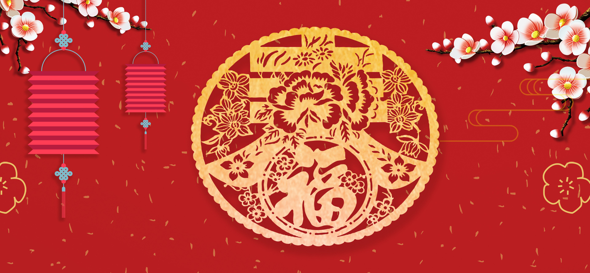

春卷，又称春饼、春盘、薄饼。是中国民间节日的一种传统食品，流行于中国各地，在江南等地尤盛。在中国南方，过春节不吃饺子，吃春卷和芝麻汤圆。并且在漳州一带清明时节也吃春卷，民间除供自己家食用外，常用于待客。春卷历史悠久，由古代的春饼演化而来。
春卷在我国有着悠久的历史，北方人也称为"春饼"。据传在东晋时代就有。那时叫"春盘"。当时人们每到立春这一天，就将面粉制成的薄饼摊在盘中，加上精美蔬菜食用，故称"春盘"。那时不仅立春这一天食用，春游时人们也带上"春盘"。到了唐宋时，这种风气更为盛行。著名诗人杜甫的"春日春盘细生菜"和陆游的"春日春盘节物新"的诗句，都真实地反映了唐宋时期人们这一生活习俗。在唐代，春盘又叫五辛盘。
宋朝吴自牧在《梦梁录》中这样描述:"常熟糍糕，馄饨瓦铃儿，春饼、菜饼、圆子汤。"到了清代，富家或士庶之家，也多春饼。
立春吃春卷是我国民间的一个传统习俗，就像端午吃粽子，大年三十吃饺子一样，伴随人们千百年来一直的延续，春卷也叫春饼，除了表示迎接新春的意思以外，还因为春卷里面通常包含了大量春天新鲜的蔬菜，因此营养价值非常高。
据说宋时福州有个书生，为了温书应试，整天埋头攻读，常常废寝忘食。他的妻子三番五次劝他也没用;就想了个办法:把米磨制成薄饼，以莱肉为馅，包成卷筒形，既当饭，又当莱。这种小吃后来定名为春卷，并逐渐流行于城乡各地。福州人春节期间常常食用，跟北方过节包饺子一样普遍。蔡襄曾写诗赞说:"春盘食菜思三九"。 当今春卷皮已改用面粉，馅一般用豆芽、韭菜、豆腐干，有的还放上肉丝、笋丝、葱花等，较高级的春卷则用鸡丝或海蛎、虾仁、冬菇、韭黄等制作而成。春卷用微火油炸至金黄色，外酥内嫩，又称为"炸春"。
春卷，又称春饼、薄饼。是中国民间节日传统食品。流行于中国各地，江南等地尤盛。民间除供自己家食用外，常用于客。